2027年 NHK大河ドラマ「逆賊の幕臣」の主人公
明治の日本をつくった設計図を描いたのに、
明治政府に「逆賊」として首を斬られた幕臣。
1860年に地球を一周してアメリカの工場を見て回り、帰国後は横須賀に巨大な造船所をつくった人です。その造船所は日露戦争の勝利を支え、ドックは今も現役。それなのに名前はほとんど知られていません。このページでは、来年の大河の主人公がどんな人なのかを写真と図でまとめました。
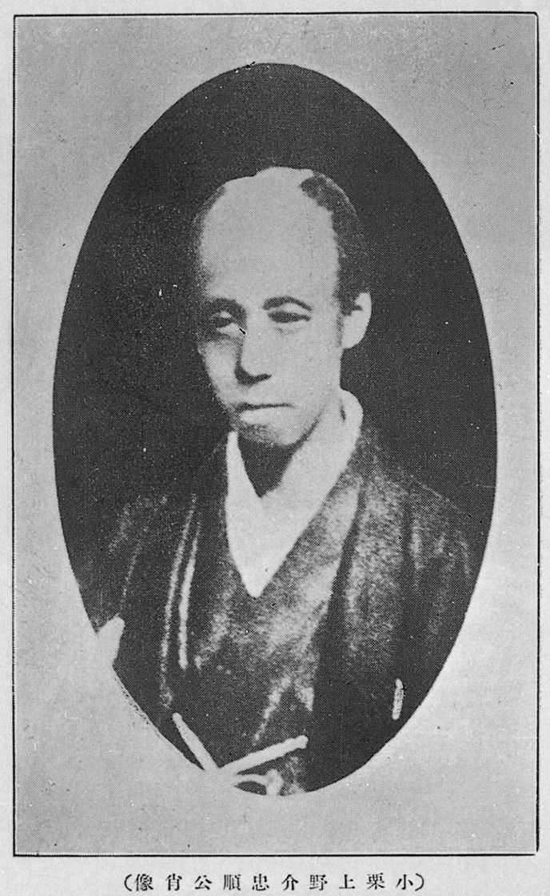
この人を一言でいうと
幕府の中で誰よりも早く「日本を工業の国にする」と動いた天才官僚。
でも幕府側だったため、勝った明治政府にとって都合の悪い存在になり、42歳で処刑されました。
短い一生のうちに、地球を一周し、日本初の近代的な造船所をつくり、そして処刑されています。
出典: Wikipedia「小栗忠順」（禄高・入門・為替・建設費・兵庫商社・世直し勢・享年）
江戸・駿河台の屋敷で生まれた、三河以来の名門・小栗家の12代目。小さい頃は手に負えない悪童と見られていましたが、成長すると学問も武芸も一流になりました。
幕府がつぶれかけていても「国の将来のため」に造船所を作り続けた。周りからは「幕府が倒れるかもしれないのに、なぜ金をかけるのか」と言われた。
→ 結果として明治政府がそのまま使った
相手が老中でも、おかしいと思えば意見した。そのせいで役を外されることも多く、役職を何度も辞めては呼び戻されている。
→ 敵も多かった
ライバルの勝海舟でさえ「誠忠無比の徳川武士」と呼んだ。最後まで新政府に頭を下げなかった。
→ これが命取りになった
出典: Wikipedia「小栗忠順」（家柄・師匠・武芸・逸話）
大事なのは1860年からの8年間。ここで日本の近代化の土台をほぼ準備し、1868年に一気に転落します。死んだあとに評価が上がっていくところまで並べました。
出典: Wikipedia「小栗忠順」「横須賀海軍工廠」（年号・日付・役職・家族）。年齢は満年齢の目安。
日米修好通商条約の批准書を交換するため、幕府が初めて正式にアメリカへ送った使節団です。リーダーは正使の新見正興、副使は村垣範正。小栗は「目付」という監察役でしたが、現地の新聞では代表と勘違いされて取材を受けるほど目立っていました。
遣米使節の航路（模式図・位置は正確な地図ではありません）。実線が行き、点線が帰り。結果として地球を一周しています。
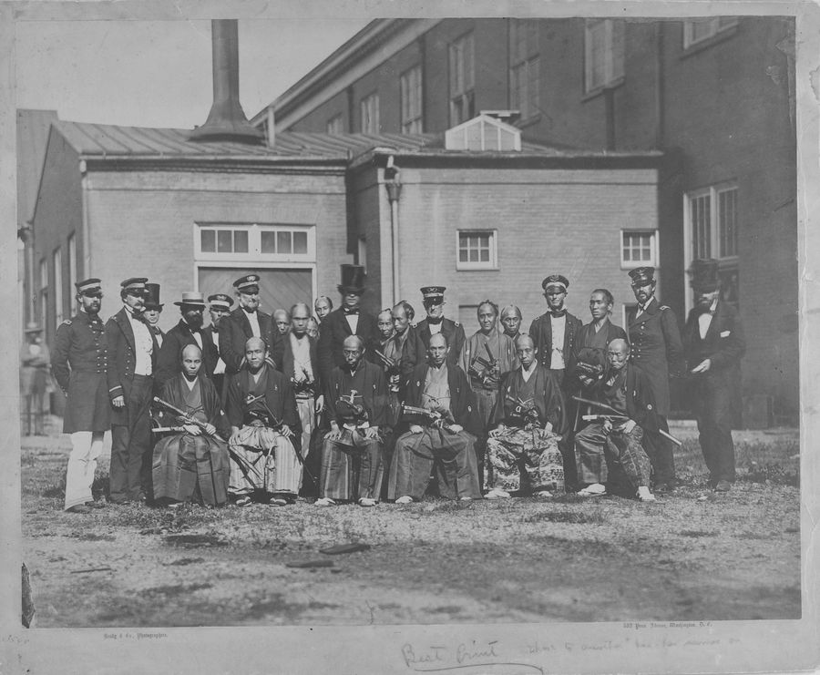
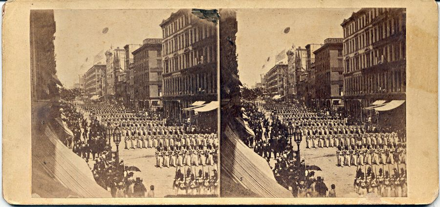
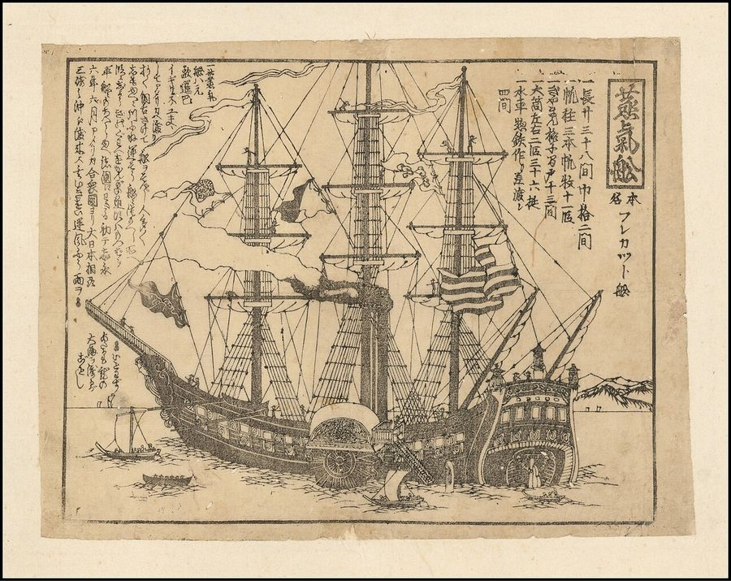
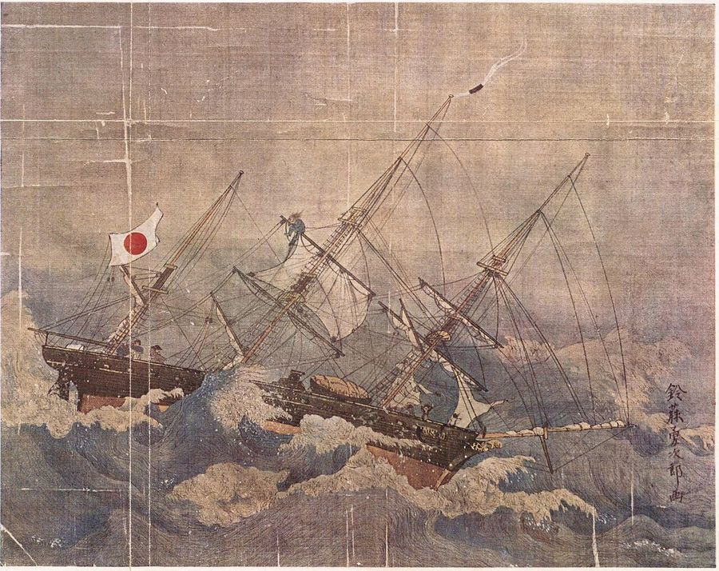
※写真はクリックで大きく表示できます
海軍工廠で、同じ形のネジが機械で大量に作られているのを見た。日本では職人が1本ずつ手で作るもの。「これからの国力は工業力だ」と確信したきっかけといわれる。
フィラデルフィアの造幣局で日米のお金を実際に分析させた。結果は一分銀＝35.6セント、一分金＝89セント。ここから1両＝3ドル60セントという交換比率が決まった。自分でそろばんをはじいてみせたという逸話も残る。
ワシントンでブキャナン大統領に会い、条約の批准書を交換した。帰りはナイアガラ号で大西洋・インド洋を回り、結果として地球を一周して帰ってきた。
出典: Wikipedia「小栗忠順」（使節の構成・ネジ・通貨分析の数値・大統領謁見）／画像: Wikimedia Commons（クレジットはページ下部）
帰国後の小栗は、外国との交渉役（外国奉行）と、お金の責任者（勘定奉行）を行き来します。どちらでも、周りが尻込みする仕事を正面から引き受けました。
ロシアの軍艦が対馬に居座り、基地を作ろうとした事件。小栗は5月10日に対馬に着き、艦長ビリレフと3回交渉した。江戸に戻って「対馬を幕府の直轄地にすべき」と老中に提案したが聞き入れられず、外国奉行を辞めている。
→ 「言っても通らないなら辞める」の最初の例
幕府の財政立て直しを指揮した。幕府が海軍用に買った船は44隻、総額333万6千ドルにのぼる。苦しい財布の中から、造船所という「将来の稼ぎ」にお金を回すと決めた。
→ 「上野介」を名乗るのはこの時から
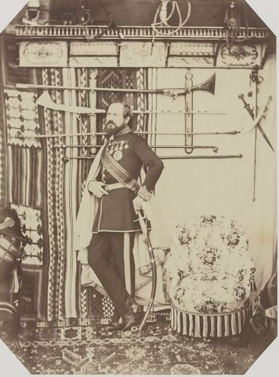
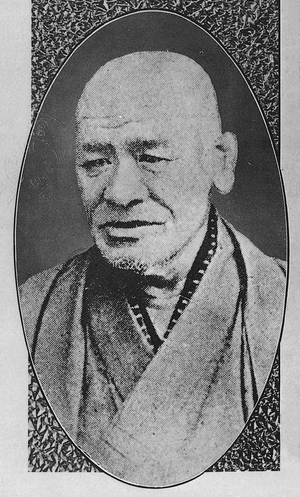
出典: Wikipedia「小栗忠順」（対馬事件・勘定奉行・購入艦船の数と総額・ロッシュとの関係・栗本鋤雲）
幕府の財政が苦しい中で、240万ドルの造船所を押し通しました。反対する人には「たとえ幕府がなくなっても、日本のためになる」と説いたと伝わります。
1860
機械で作るネジ・造船所・造幣局
1865
フランスと組み、技師ヴェルニーを招く
1868
借金を肩代わりして接収
1871〜
1876年に初の国産軍艦「清輝」
1905
東郷平八郎が小栗の遺族に礼を言う
小栗の構想が、幕府が消えたあとも明治の海軍を支えた流れ。
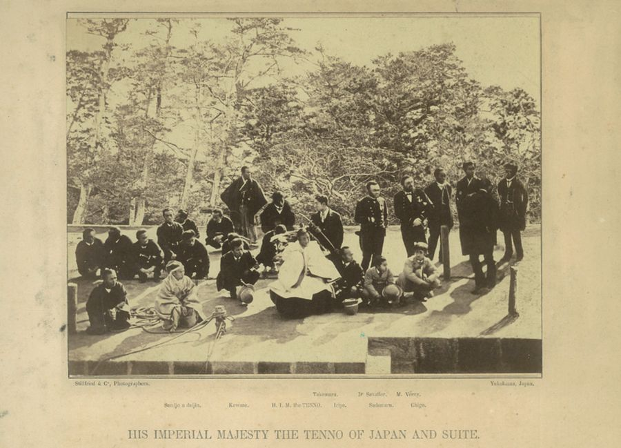
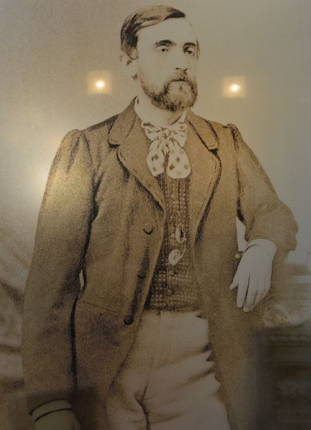
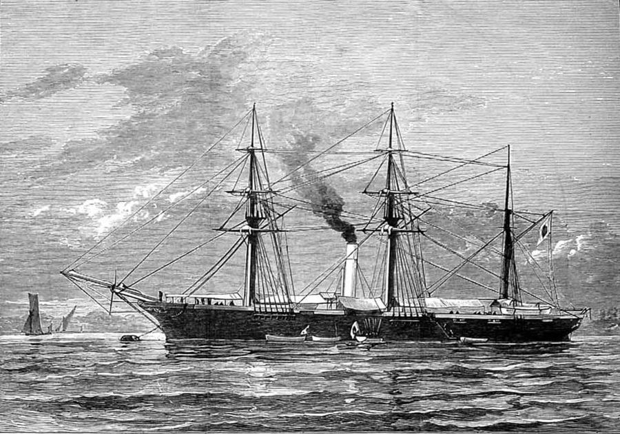
1870年にできた学校で、校長はヴェルニー。パリの名門エコール・ポリテクニクがお手本。13〜20歳が対象で、衣食住は国持ち。1888年までに約100人が卒業し、のちに東京帝国大学工学部の造船学科につながる。
観音埼灯台・野島埼灯台・品川灯台・城ヶ島灯台には、横須賀製鉄所で焼いた煉瓦が使われた。造船所が「日本の工業の母」になっていった。
完成直前に大政奉還。新政府は1868年9月にイギリス系の銀行から借金し、幕府がフランスの銀行に負っていた借金を返して製鉄所を引き継いだ。
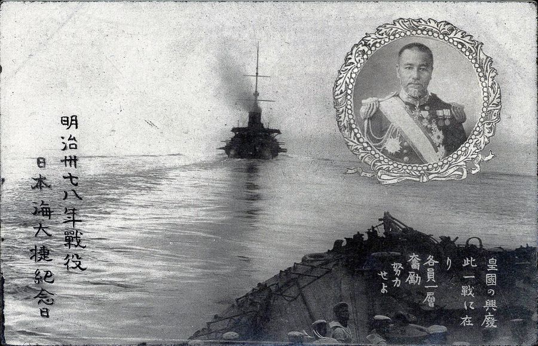
幕府の運命に限りがあっても、日本の運命には限りがない。
小栗忠順の言葉として伝わるもの（趣旨）
同じ売り家にするにしても、土蔵付きの売り家にしておけば、それが徳川の名誉になる。
造船所をつくる理由を聞かれて答えたと伝わる言葉（趣旨）
※2つの言葉は伝記などで広く紹介されているもので、一次資料での確認はできていません。「土蔵付き売り家」＝家を手放すにしても立派な蔵を付けて渡せば、建てた者の名が残る、というたとえ。
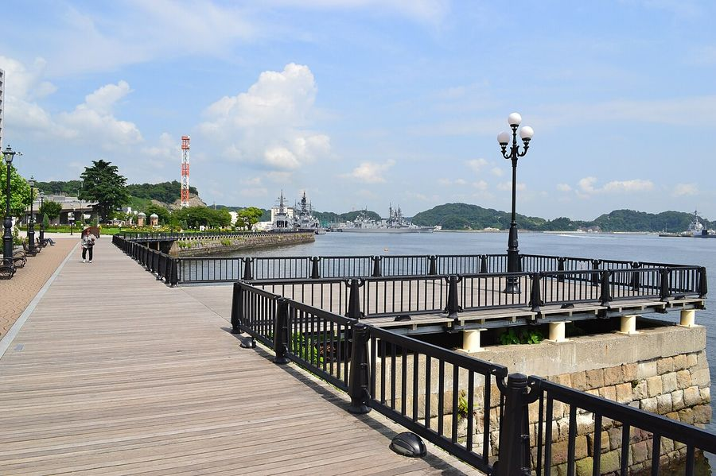
出典: Wikipedia「小栗忠順」「横須賀造船所」「横須賀海軍工廠」（着工・建設費・新政府の接収・黌舎・灯台・清輝・東郷の評価）／横須賀市自然・人文博物館資料、神奈川新聞（ドック・日本遺産）
司馬遼太郎は小栗を「明治国家の父の一人」と書きました。明治政府がやった近代化の多くを、小栗は幕府の中で先に始めています。
大阪の商人から100万両を集めて作った貿易会社。出資者を募って事業をする仕組みで、日本初の株式会社といわれる。英語の「company」を「商社」と訳したのは小栗だという説もある。
→ 会社という考え方のはしり
1867年1月、フランスから軍事顧問団が到着。近代的な陸軍の訓練を始めた。横浜にはフランス語の学校も開いている。
→ 明治の軍制の下地
外国人向けの本格的な西洋式ホテル。小栗が発案・主導し、1867年8月に着工、翌年8月に完成した。完成したとき、小栗はもうこの世にいなかった。
→ 東京の新名所として錦絵にもなった
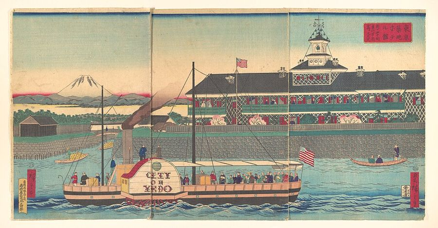
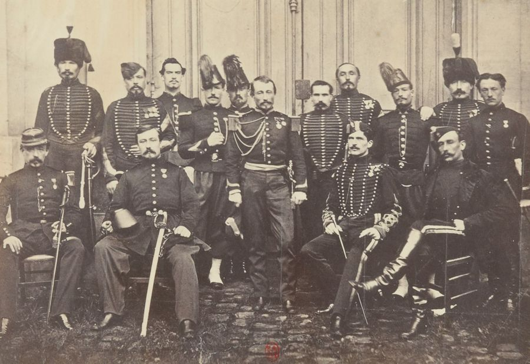
出典: Wikipedia「小栗忠順」（兵庫商社・「商社」訳語説・軍事顧問団の到着日・築地ホテル館の着工と完成・司馬遼太郎・大隈重信の評価）
ドラマに出てきそうな人を、味方・ライバル・死後に関わった人に分けました。顔と名前を先に知っておくと、ドラマがぐっと見やすくなります。
栗本鋤雲
同じ塾の幼なじみ。フランスとの窓口
レオン・ロッシュ
フランス公使。横須賀計画の相棒
ヴェルニー
横須賀製鉄所を指揮したフランス人
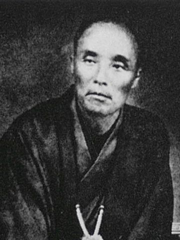
三野村利左衛門
小栗家に仕えたのち三井の大番頭に。小栗の死後、家族を支えた
小栗忠順
勘定奉行・外国奉行
演: 松坂桃李
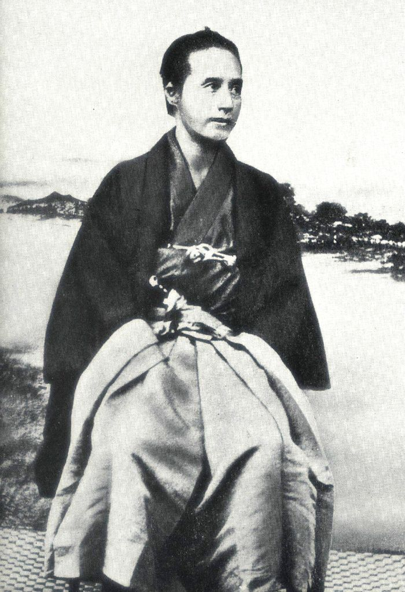
勝海舟
同じ幕臣。最後は「戦わずに明け渡す」側
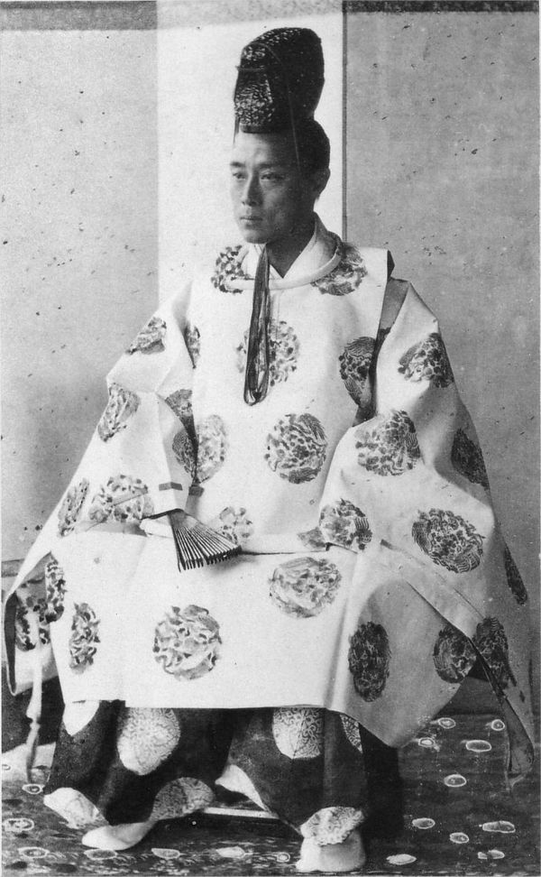
徳川慶喜
最後の将軍。小栗の抗戦策を退けた
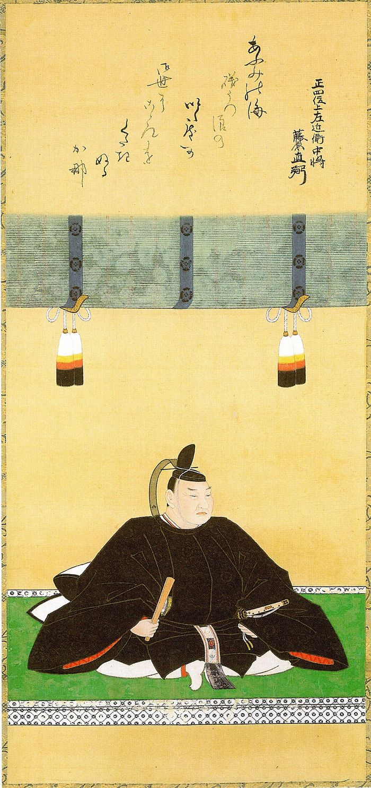
井伊直弼
遣米使節を送り出した大老。1860年に暗殺
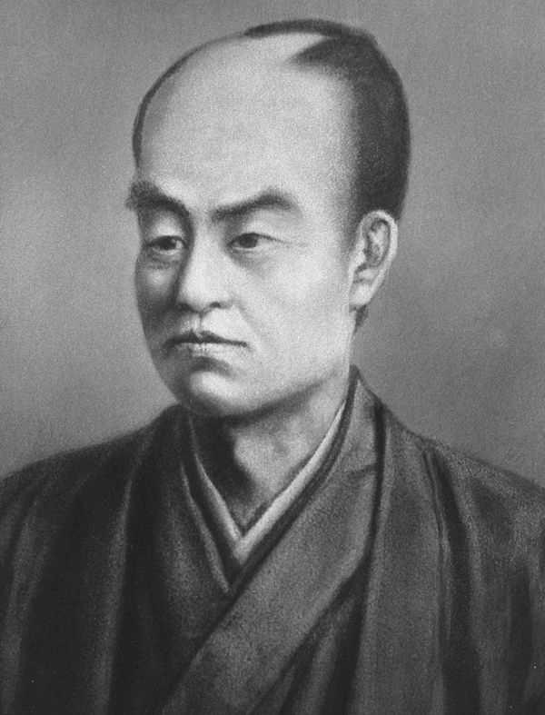
大村益次郎
新政府軍の作戦の中心。小栗の策を一番恐れた
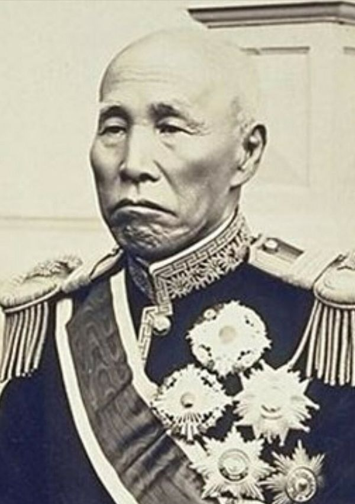
大隈重信
明治政府の重鎮。妻の綾子は小栗の従姉妹。小栗の娘・国子を引き取って育てた
東郷平八郎
日本海海戦の司令長官。1912年に小栗の遺族へ礼を述べた
出典: Wikipedia「小栗忠順」（人物の関係）
ドラマのタイトル「逆賊の幕臣」の意味はここにあります。1868年1月、新政府軍が江戸に迫る中で、小栗と勝海舟は正反対の答えを出しました。
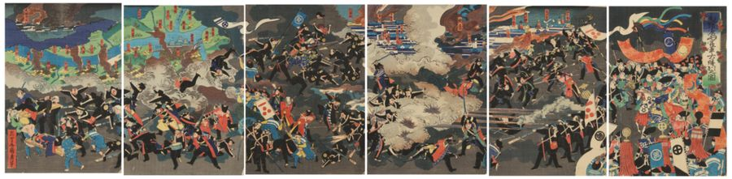
勘定奉行小栗忠順
「戦えば勝てる」
陸軍総裁勝海舟
「戦わずに明け渡す」
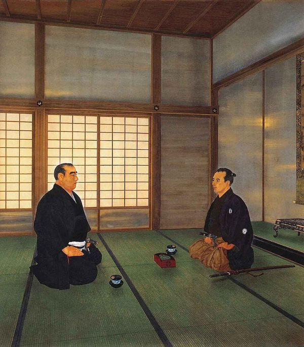
出典: Wikipedia「小栗忠順」（評定の日付・挟撃策・罷免・彰義隊・大村益次郎の評価）、Wikipedia「勝海舟」（没年・爵位）
小栗は、いまの群馬県高崎市倉渕町にあたる上野国権田村で、静かに暮らすつもりでした。水路を整えたり、塾を開いたりしています。それがわずか2か月あまりで終わります。
1月29日
罷免の2週間後。家族と家臣を連れて上州へ
3月4日
世直し勢が東善寺を囲む。鉄砲で追い払った
閏4月
大砲や銃を持ち、農兵を訓練していると疑われる
閏4月4日
東山道軍の軍監、豊永貫一郎と原保太郎が率いる高崎・安中・吉井の藩兵
閏4月6日
家臣3人と共に。最期に「お静かに」
罷免から処刑までわずか約3か月。疑いの中身（農兵の訓練）は、そうした様子は見られなかったとされています。
取り乱す家臣たちに「お静かに」と諭し、家族の命だけは助けてほしいと頼んだとされる。
斬ったのは軍監の原保太郎だとする説と、安中藩の徒目付・浅田五郎作だとする説がある。
許嫁と一緒に家を継ぐはずだった養子の忠道も捕らえられ、斬られた（演: 齋藤潤）。
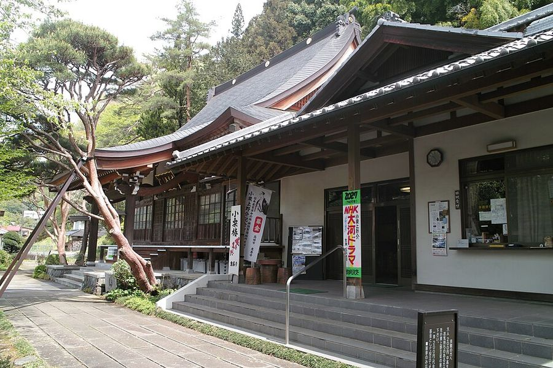
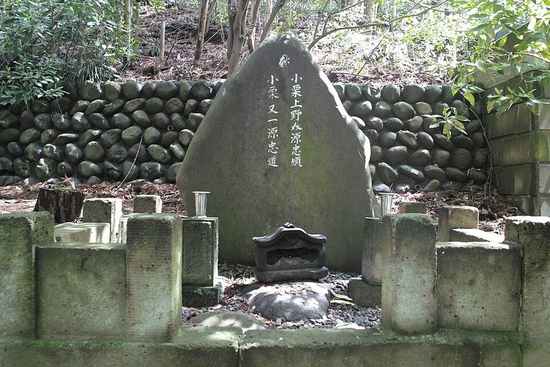
出典: Wikipedia「小栗忠順」（権田村での暮らし・世直し勢・捕縛者・処刑・最期の言葉・斬首者の2説）
小栗が処刑されたとき、妻の道子はお腹に子どもがいました。そこから家が復活するまでには、意外な人たちの助けがあります。
出典: Wikipedia「小栗忠順」（道子・国子・三野村・大隈綾子・小栗貞雄・玄孫）
明治の間は「逆賊」として語られにくかった人物です。明治政府中心の歴史の見方が薄れるにつれて、「本当は日本のために一番働いた人では」という声が大きくなりました。
日本海海戦で勝てたのは、小栗さんが横須賀に造船所を造っておいてくれたおかげだ。
東郷平八郎（1912年、遺族への礼として伝わる）
明治政府の近代化は、小栗の模倣にすぎない。
大隈重信（伝わる言葉）
眼中ただ徳川氏あるのみにして、大局達観の明なし。
勝海舟（ライバルとして厳しい評価）
誠忠無比の徳川武士。
勝海舟（同じ人が忠義は認めている）
小栗の策が実行されていたら、我々の首はなかっただろう。
大村益次郎（伝わる言葉）
明治国家の父の一人。
司馬遼太郎
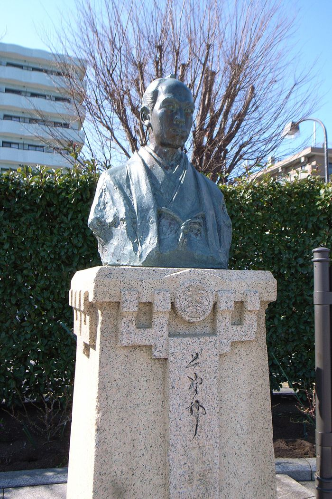
勘定奉行だった小栗が、幕府の金を赤城山などに埋めたという伝説がある。テレビの発掘番組でも有名になったが、裏付ける証拠はこれまで見つかっていない。
蜷川新が『維新前後の政争と小栗上野の死』を書き、小栗が無実の罪で殺されたことを世に問うた。
最後を過ごした権田村（高崎市倉渕町）には東善寺や「道の駅くらぶち小栗の里」があり、地元の人が名誉回復を長く訴えてきた。
出典: Wikipedia「小栗忠順」（各評価・埋蔵金・蜷川新）／Wikimedia Commons（ヴェルニー・小栗祭の写真説明）
関東を中心に、生まれた場所、仕事の場所、最期の場所が散らばっています。大河が始まると、このあたりが観光で盛り上がるはずです。
位置関係の模式図です（縮尺は正確ではありません）。番号は右の一覧と対応。
生まれた屋敷があった場所。雑司ヶ谷霊園には墓所がある。築地ホテル館があったのも東京。
造船所の跡地を望む公園。小栗とヴェルニーの胸像があり、毎年「ヴェルニー・小栗祭」が開かれる。ドックは米海軍基地の中で今も現役。
最期の地。菩提寺の東善寺、処刑された烏川の水沼河原、「道の駅くらぶち小栗の里」がある。
小栗家の墓所がある寺。
処刑後、妻の道子たちが逃れた先。娘の国子がここで生まれた。
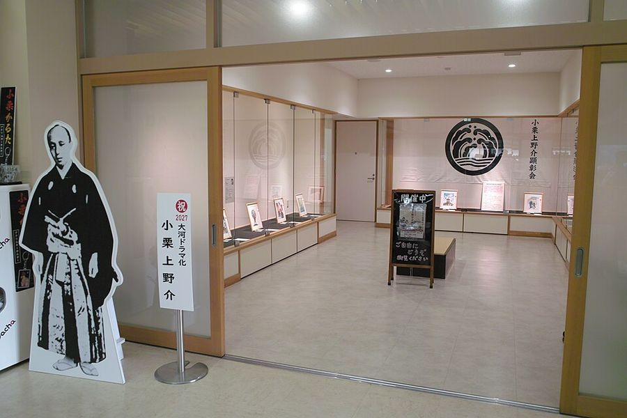
出典: Wikipedia「小栗忠順」（生誕地・墓所3か所・会津）／Wikimedia Commons（東善寺・道の駅の写真説明）
主人公になるのは今回の大河が初めてですが、小説や漫画ではたびたび描かれてきました。予習するならこのあたりです。
小説
タイトルがそのまま小栗の立場を表している。
小説
小栗を題材にした歴史小説。
漫画
小栗が登場する漫画。
漫画
幕末を描く長編歴史漫画。小栗も登場する。
大河ドラマ
渋沢栄一が主人公の大河。小栗も登場人物の一人として描かれた。
大河ドラマ
小栗が初めて主人公になる。演じるのは松坂桃李。
出典: Wikipedia「小栗忠順」（題材にした作品）
NHK大河の第66作です。原作のない完全オリジナルで、主人公・小栗と、ライバル・勝海舟の2人を軸に幕末を描きます。
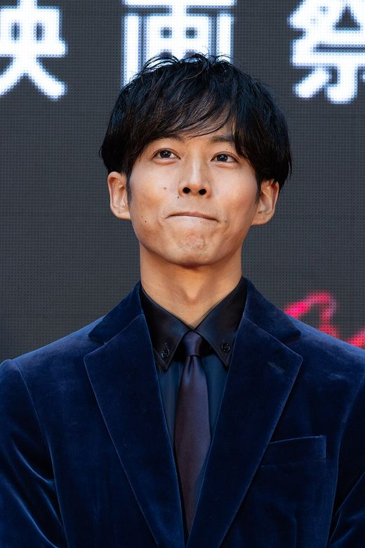
松坂桃李
小栗忠順（主人公）
先が見えすぎて周りとぶつかる天才官僚を演じる。
Photo: Dick Thomas Johnson / CC BY 2.0
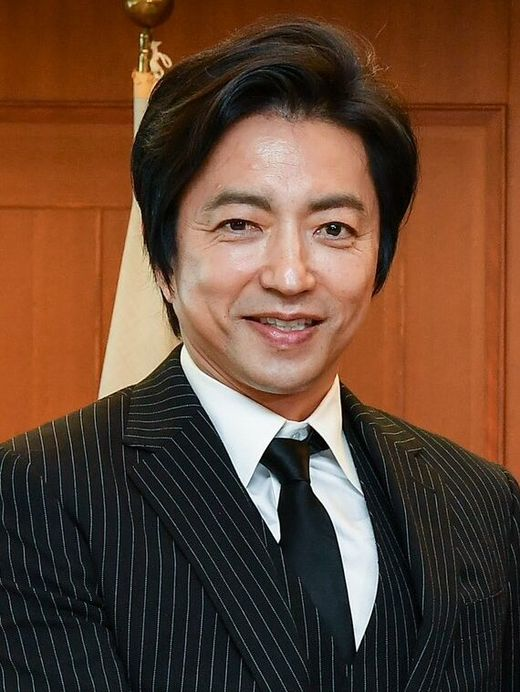
大沢たかお
勝海舟（ライバル）
江戸無血開城の立役者。大河は『花の乱』『花燃ゆ』に続いて3回目。
写真: 防衛省 / CC BY 4.0
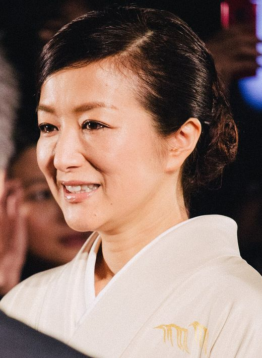
鈴木京香
くに（母）
小栗の母。日下対馬守の妹。
Photo: Dick Thomas Johnson / CC BY 2.0
上白石萌音
みち（妻・道子）
夫の死後、会津で娘を産む。
自由に使える写真なし
北村有起哉
小栗忠高（父）
1855年に急死し、忠順が家を継ぐ。
自由に使える写真なし
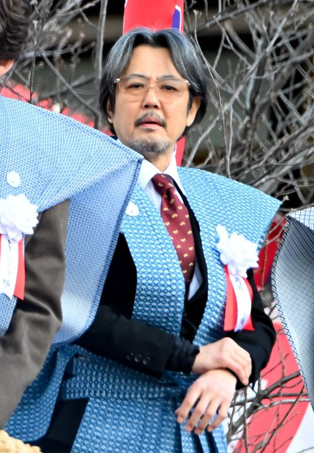
岡部たかし
井伊直弼
遣米使節を送り出した大老。桜田門外で暗殺される。
Photo: m-louis / CC BY-SA 4.0
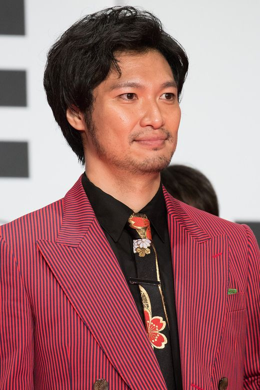
青木崇高
栗本鋤雲
子どもの頃からの盟友。フランスとの窓口。
Photo: Dick Thomas Johnson / CC BY 2.0
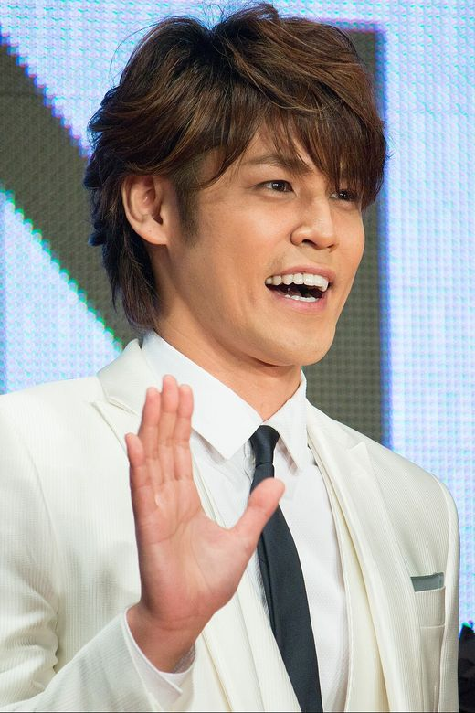
宮野真守
滝川具挙
幕臣。大河は初出演。
Photo: Dick Thomas Johnson / CC BY 2.0
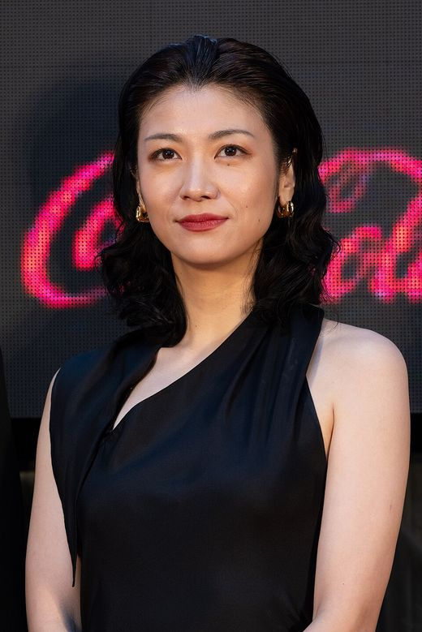
瀧内公美
たみ（勝海舟の妻）
ライバル側の家庭も描かれる。
Photo: Dick Thomas Johnson / CC BY 2.0
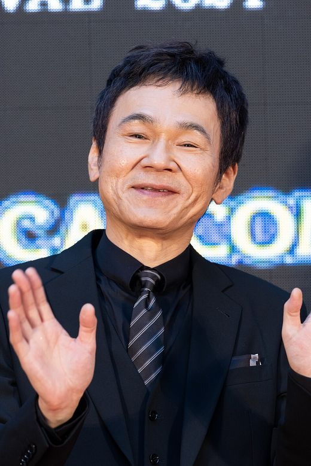
甲本雅裕
佐藤藤七
権田村の名主。小栗の最後の日々に関わる。
Photo: Dick Thomas Johnson / CC BY 2.0
写真はWikimedia Commonsで自由に使えるものがある人だけ載せています。写真の撮影時期や場面はドラマとは関係ありません。
出典: シネマトゥデイ（2026年4月24日・追加キャスト5名・制作統括）、デイリースポーツ（2026年2月24日・追加キャスト5名）、さきがけ（2026年8月28日・第6弾キャスト）。放送開始日は報道ベースで、NHKの公式発表で最終確認を。
幕末ドラマに出てくる役職や言葉を、今の言葉に置きかえるとこうなります（だいたいのイメージです）。